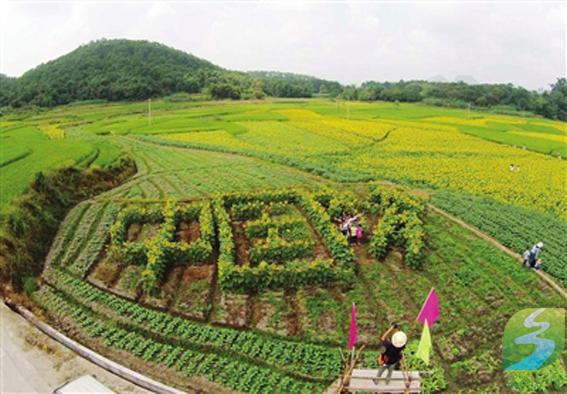

广西融安：生态旅游乐农家
时间：

游客在融安县大良镇西村与“中国梦”字样的向阳花合影。谭凯兴摄
“哇，好美呀！我要拍照片发微友，让他们都快快来赏花，分享这美丽的画面。”国庆期间，在融安县大良镇西村，大片油葵花盛开，吸引了大量的游客，前来赏花的游客陈米丽一边高兴的说着，一边奔向花海中。
秋分过后，融安县1000余亩油葵进入花期，金黄的油葵与原生态的山水成为国庆假日游玩的好去处。
近年来，融安县依托乡村生态资源优势，将生态村建设和农家生态旅游紧密结合起来，推进农业功能开发，深入推动生态旅游“农家乐”工程，走经济型、生活型、生态型、观光型农业发展之路，成为促进农民增收致富的重要途径。
在大良镇西村，立秋过后，农民利用收过早稻的冬闲田种植油葵，目前油葵花已陆续进入花期，吸引大量游客前来观光体验。
“以前我们收罢稻子，这些田也就空着了，没有什么收入，现在好了，县里发动我们种上油葵，吸引了好多的游客来玩，我们村也出名了，村民还增加了收入。”大良镇西村油葵种植户陈智铮告诉记者。
据悉，融安县采用政府扶持鼓励，农技人员亲临村屯指导，鼓励广大群众发展种植生态油葵，
今年全县种植油葵面积1000多亩，以大良镇、浮石镇209国道观光沿线为主，每亩油葵可产油150斤左右，若按每斤15—20元计，每亩可助农增收2250—3000元，同时也带动了该县的农业观光旅游产业。
近年来，融安县结合发展农家乐和新农村建设，积极发展生态旅游业，及时调整秋冬种计划，调整产业结构，打造“209国道生态农业观光旅游风情线”，重点种植油菜、双季葡萄、油葵等作物，同时，融合旅游业，建设一批农业采摘点和农家乐，发展生态休闲旅游，助农增收。
大洲村是位于融江上的一个孤岛，四面环水，岛上鸟语花香，田野遍地，庭院优雅整洁、村民热情好客。
生活渐好的大洲人从2004年起开办了乡村游，从此一发不可收。岛上10多家农户办起了农家乐，村里推出了翠竹园、桃花园、钓鱼台、百米瓜果长廊、沙洲沪场等多处景区和设施，耕田、捕鱼、种菜、采摘等体验项目和“大洲农家菜谱”更是让游客乐不思归。
生态旅游给大洲人带来的实惠是看得见的。去年，村里接待游客4万人次，仅旅游一项就让村民人均增收400元。今年“五一”小长假，村民余艳玲创办的“岛上人家”旅游每天接待游客50多人次，每天收入近千元。
雅瑶乡西古坡屯依托独特的壮族民族风情和得天独厚的自然资源优势，通过对浪溪江沿岸的原生态林区环境和自然风光进行合理开发,建设农家休闲旅游景区，大力发展农家生态休闲旅游业，使该屯走上了促农增收、经济社会快速发展的康庄大道。
自2012年5月以来，西古坡屯共接待旅客2万多人次，提高了当地农民的收入，2012年全屯人均纯收入7311元,实现农民人均纯收入增长300元以上。
如今，古坡屯已成为雅瑶乡发展生态休闲旅游业的示范基地，被评为自治区级民族团结示范屯和AAA级农家休闲旅游点。
雅瑶乡相关负责人表示，今后，雅瑶乡会在大力发展农家生态休闲旅游业的同时，进一步挖掘西古坡屯“惟仁者寿”清朝牌匾和蒋家进士牌匾的历史文化价值，将农家旅游向养生、人文旅游延伸。
据了解，融安县结合新农村建设和柳州市“十大美丽乡村”评比，打造了浮石镇鹭鹚洲村、大坡乡岗伟村、沙子乡石岩屯等一批特色村屯，以原生态的山水风光、民族文化、特色水果种植为载体发展乡村生态旅游，不仅改善了农村基础设施建设，也加快了农民致富的步伐。来源：中国旅游报□本报驻广西记者孟萍通讯员谭凯兴
原文链接： 广西融安：生态旅游乐农家